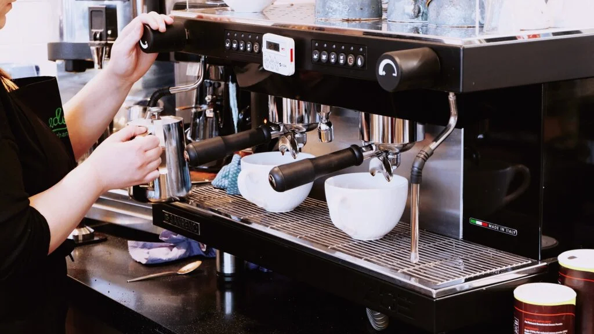

Coffee industry in
Switzerland
Switzerland is famous for cheese and chocolate. However, Switzerland exports way higher value of coffee than
cheese and coffee. According to UN trade statistics, Switzerland exported $9.37 billion of coffee in 2018.
As a result, Swiss coffee exports ranked 4th behind Brazil, Germany, and Vietnam.
However, coffee beans are not the only famous Swiss product for the coffee industry. Switzerland has many
companies manufacturing commercial coffee machines for coffee shop chains.
Lack of information about machine usage
Such machines are normally sold with a service contract for maintenance. The frequency of the maintenance
depends on the usage. However, the manufacturer does not know how coffee shops use their machines. It is not
clear whether a machine serves 2 or 60 cups of coffee per hour.
Since the manufacturer has no real-time data to monitor machine usage, it sends technicians to shops every
month for maintenance. On one hand, the monthly maintenance check can be too often for some machines. On the
other hand, it can also be too little for machines that serve a lot of coffee.
Connect coffee machines to the cloud
By installing IoT sensors in coffee machines, the manufacturer is able to monitor the machine usage in
real-time. As a result, the manufacturer will only send out technicians when maintenance is really needed.
In average, the manufacturer can save one service ride per machine annually. The cost reduction will be
millions of Swiss francs.
Milk line cleaning check with IoT
IoT will not only benefit the manufacturer, but also the coffee shop chains. Coffee shops serve coffee and
milk. To have proper hygiene, milk handling is critical. In order to protect end customers and the brand
image, some coffee shop chains have internal rules for milk line cleaning. For example, the baristas should
rinse the milk line every 30 minutes. However, coffee shop chains have no idea if the baristas follow the
cleaning rule or not.
With IoT sensors, coffee shop chains will have real-time cleaning information of every machine worldwide.
qiio helps you with innovation
qiio offers an end-to-end solution covering hardware, software, cloud services, and operation. Everything a
customer needs to connect coffee machines online is provided. Customers will receive a full-package solution
directly from qiio and do not have to deal with different partners and service providers. As a customer, you
will get one partner and one solution, where hard- and software go hand in hand seamlessly.
Check this blog article to learn more about qiio’s end-to-end solution. qiio has implemented its IoT
solution in the beer industry, check this blog article to see how IoT helps sales prediction and logistics
optimization.